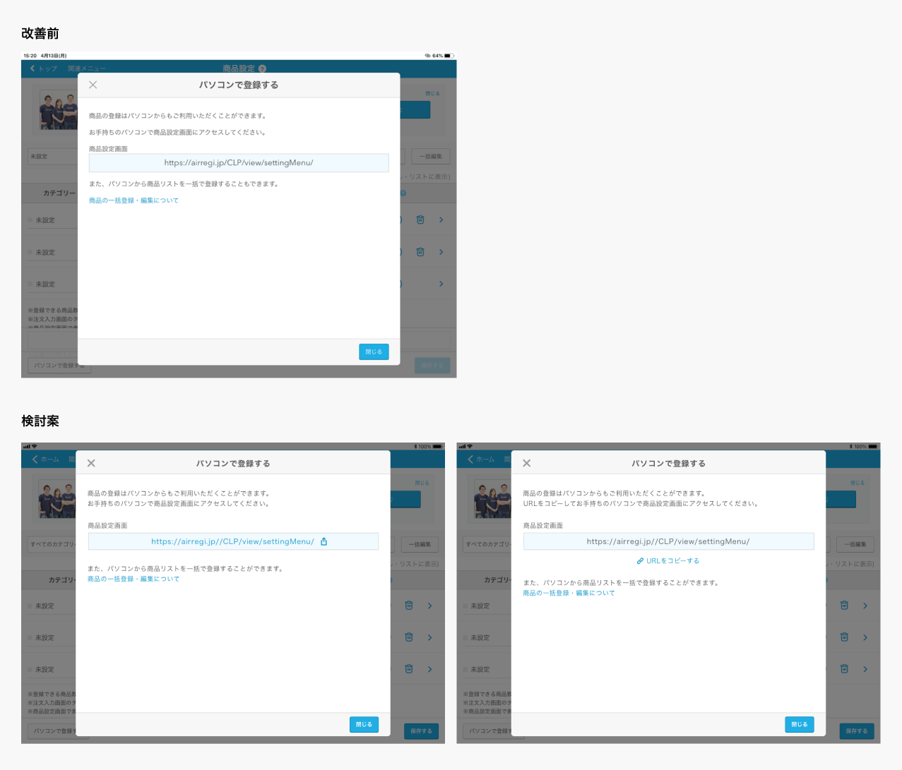

SaaSサービスUI デザイン/事務業務
2021
- 概要
- SaasサービスのUI作成、デザイン組織のオンボーディング方針決め、既存サービスの負債解消を実施
- デザイン業務の進め方
- 1.要件定義
-
既存のデザイン課題、ユーザーからの意見をもとに改善対象を決定。
課題に対して、機能・UI改善の改善方針を検討し、確定させる。
- 課題
-
・モーダル上に表示されている「商品設定画面」項目に記載されているURLがコピーできず、パソコンで登録をする際にはURLの直打ちのみ
・WEBビューでの実装だったため、iOSネイティブで実装可能な技術は使えない、という制約をもとにデザインを検討する

- 2.デザインの作成
-
決定した機能・UI改善の改善方針に沿ってデザインを作成
技術的に実装可能かを含めて、エンジニアとの調整を行う
要件・仕様をコンフルにまとめて、invisionを通してエンジニアに素材とデザインを連携する
- デザイン以外の業務
-
・サービス内でデザインのトンマナや、コンポーネントの使用方法のずれを解消するため、該当箇所を洗い出しドキュメントにまとめて仕様書といてまとめて開発への連携
・稼働負荷が高くなっているsketch、abstractの課題を整理し、運用方法を検討する
・新規参画社向けのドキュメントを整備し、オンボーディング資料を整備
・マネージメント業務に伴う事務作業